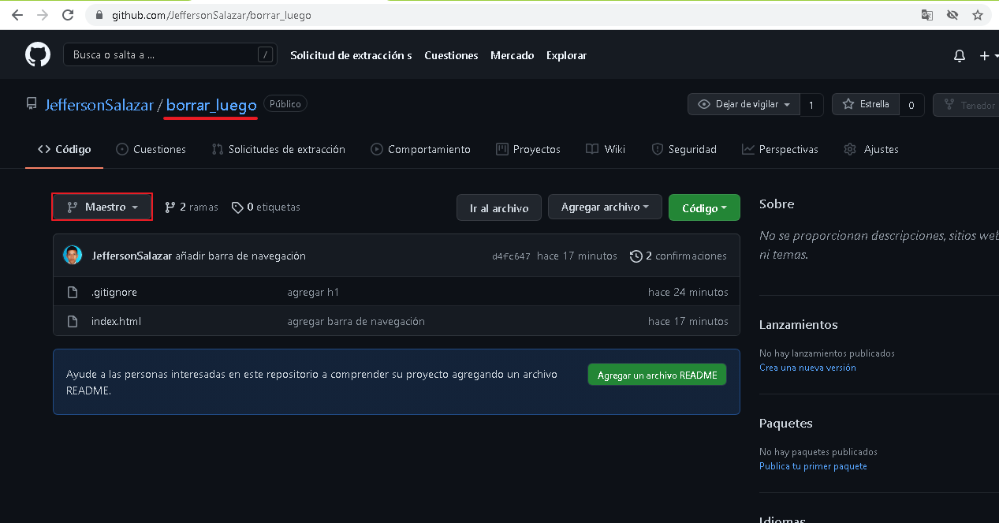
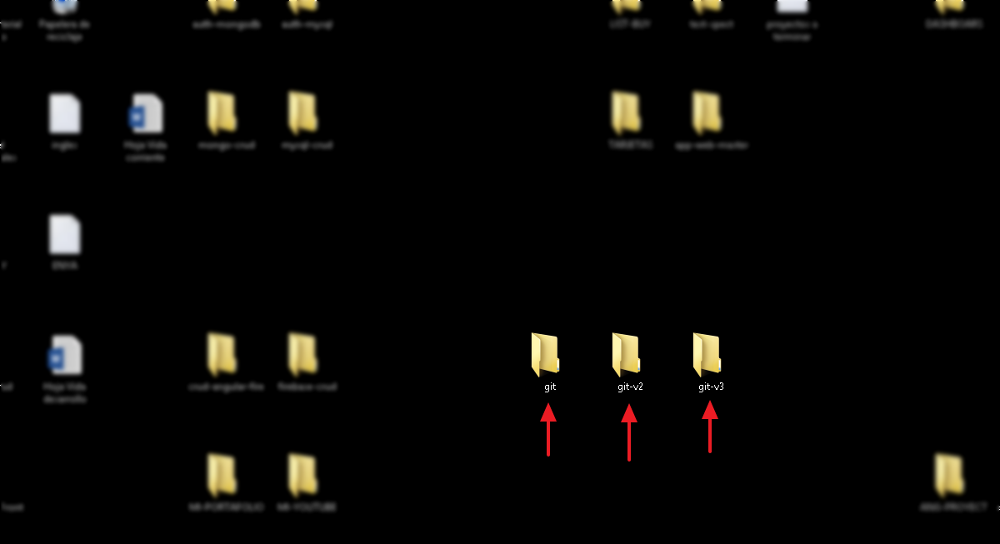
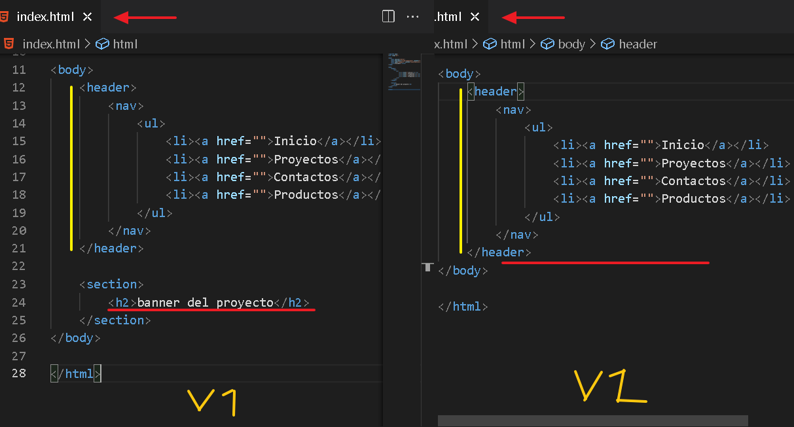
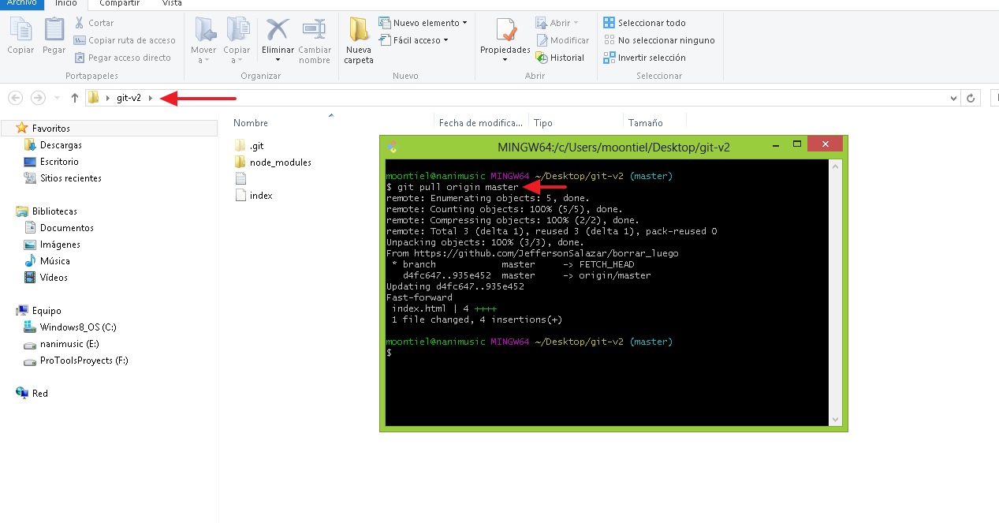
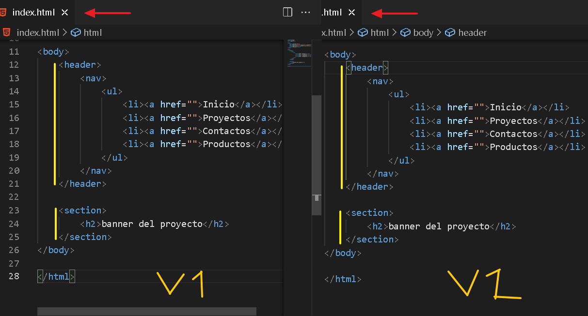
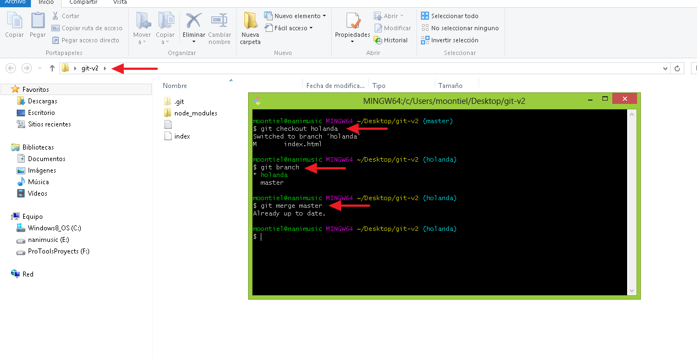
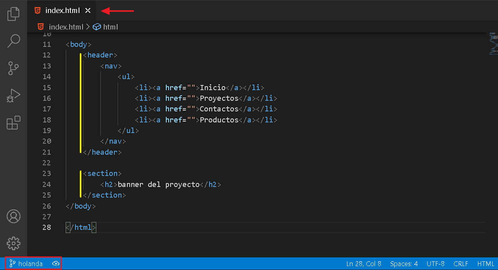

07. Git Pull
Ahora aprendamos sobre git pull que nos permite actualizar un proyecto a la version mas reciente del mismo. Cabe resaltar que funciona si tenemos el proyecto en un repositorio de github
01. Repositorio obligatorio en github

02. Haber diferentes versiones del proyecto

03. Dos versiones del mismo proyecto

04. Git pull origin master: Actualiza a la version mas reciente

05. Versiones actualizadas

-------------------- End --------------------
01. Actualizando la rama de trabajo

02. Rama de trabajo actualizada

End Git Pull